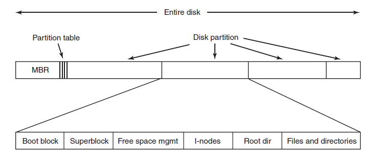
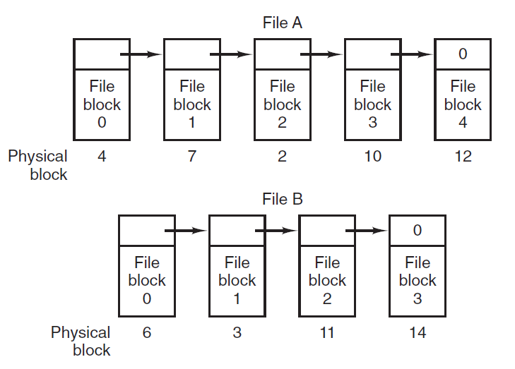
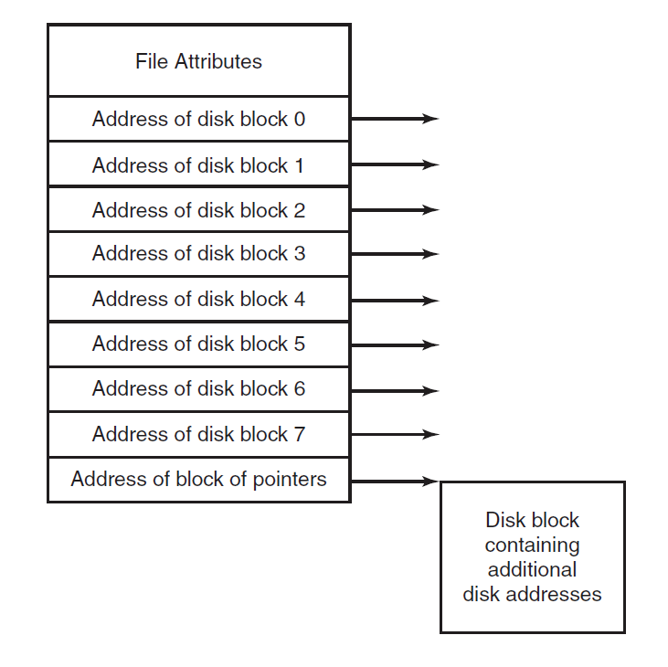
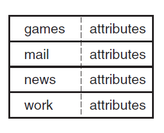
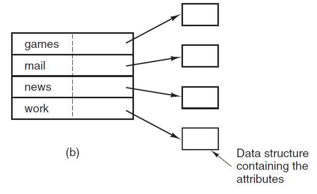
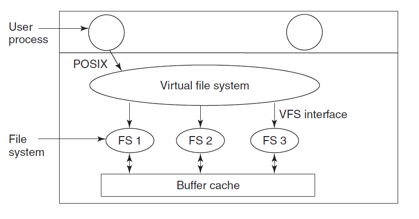

File System Implementation
File system implementation defines how files and
directories are stored, how disk space is managed,
and how to make everything work efficiently and reliably.
File-System Layout

File Systems are stored on disks.
The above figure depicts a possible File-System Layout.
- MBR: Master Boot Record is used to boot the computer
- Partition Table: Partition table is present at the end of MBR.
This table gives the starting and ending addresses of each partition.
- Boot Block: When the computer is booted, the BIOS reads in and executes the MBR.
The first thing the MBR program does is locate the active partition,
read in its first block, which is called the boot block, and execute it.
The program in the boot block loads the operating system contained in that partition.
Every
partition contains a boot block at the beginning though it does not contain a bootable operating system.
- Super Block: It contains all the key parameters about the file system and is read into memory when the computer is booted or the file system is first
touched.
Implementing Files
- Contiguous Allocation:
Each file is stored as a contiguous run of disk blocks.
Example: On a disk with 1KB blocks, a 50KB file would be allocated 50 consecutive blocks.
With 2KB blocks it would be 25 consecutive blocks.
Each file begins at the start of a new block, so that if file A is occupying 3½ blocks, some space is wasted at the end of the last block.
Advantages:
Simple to implement.
The read performance is excellent because the entire file can be read from the disk in a single operation.
Drawbacks:
Over the course of time the disk becomes fragmented.
-
Linked List Allocation:
The second method for storing files is to keep each one as a linked list of disk blocks.
The first word of each block is used as a pointer to the next one.
The rest of the block is for data.
Unlike Contiguous allocation no space is lost in disk fragmentation.

Random access of a file is very slow.
-
Linked-List Allocation Using a Table in Memory:
The disadvantage of linked list can be overcome by
taking the pointer word from each disk
block and putting it in a table in memory.
Such a table in main memory is called a FAT
(File Allocation Table).
Using FAT random access can be made much easier.
The primary disadvantage of this method is
that the entire table must be in memory all the time to make it work.
-
I-nodes: I-node is a data structure which is used to identify which block belongs to which file.
It contains the attributes and disk addresses of the file's blocks.
Unlike the in-memory table the i-node need
to be in memory only when the corresponding file is open.

Implementing Directories
The main function of the directory system is to map the ASCII name of the file onto the information needed to locate the data.
A directory can be designed in two ways.
-
In a simple design a directory consists of a list of fixed-size entries,one per file, containing a (fixed-length) file name, a structure of the file attributes, and
one or more disk addresses telling where the disk blocks are.

-
For systems that use i-nodes, another possibility for storing the attributes is in the i-nodes, rather than in the directory entries.
In that case, the directory
entry can be shorter: just a file name and an i-node number.

Shared Files
When several users are working together sharing of files takes place.
In such a case it is convenient for a file to appear simultaneously in different directories belonging to
different users.
Sharing files is convenient but also introduces problems like if the original file or the shared file are appended with new features then it will not be updated in both
the copies of the file, it is updated only at its original location.
This way the purpose of file sharing is defeated.
This problem can be solved by two ways:
Log-Structured File Systems
A log-structured filesystem is a file system in which data and metadata are written sequentially to a circular buffer, called a log.
- The idea that drove the LFS design is that
as CPU's and RAM's are getting faster and larger in the future, most disk accesses will be writes, so the read-ahead mechanism used in some file systems to fetch blocks before
they are needed no longer gains much performance.
- Using LFS all writes are initially buffered in memory, and periodically all the buffered writes are written to the disk in a
single segment, at the end of the log.
Opening a file now consists of using the map to locate the i-node for the file.
Once the i-node has been located, the addresses of the blocks
can be found from it.
All of the blocks will themselves be in segments, somewhere in the log.
- Since eventually the log will occupy the entire disk, at which time no new segments can be written to the log.
To deal with this problem, LFS has a cleaner thread that
spends its time scanning the log circularly to compact it.
In this the disk is a big circular buffer, with the writer thread adding new segments to the front and the
cleaner thread removing old ones from the back.
While Log-Structured File Systems are a good idea they are not widely used.
Journaling File Systems
The basic idea here is to keep a log of what the file system is
going to do before it does it, so that if the system
crashes before it can do its planned work, upon
rebooting the system can look in the log to see what was
going on at the time of the crash and finish the job.
Such file systems, called journaling file systems, are
actually in use.
Operations that take place for removing a file:
- Remove the file from its directory
- Release the i-node to the pool of free i-nodes
- Return all the disk blocks to the pool of free disk blocks
The functioning of Journaling file system is such that it
first writes a log entry listing the three actions to be completed.
The log entry is then written to disk.
Only after the log entry has been written, the various operations begin.
After the operations are completed successfully, the log entry is erased.
If the system now crashes
upon recovery the file system can check the
log to see if any operations were pending.
If so, all of them can be rerun (multiple times in the
event of repeated crashes)
until the file is correctly removed.
Crash recovery can be made fast and secure when
log operations are idempotent.
Virtual File Systems
An operating system can have multiple file systems in it.
Virtual File Systems are used to integrate
multiple file systems into an orderly structure.
The key idea is to abstract out that part of the file system
that is common to all file systems and put that code
in a separate layer that calls the underlying concrete file
system to actually manage the data.
Structure of Virtual File Systems in UNIX system:

The VFS also has a 'lower' interface to the concrete file systems,
which is labeled VFS interface.
This interface consists of several dozen function calls that
the VFS can make to each file system to get work done.
VFS has two distinct interfaces: the upper one to the user processes
and the lower one to the concrete file systems
VFS supports remote file systems using the NFS (Network File System) protocol.